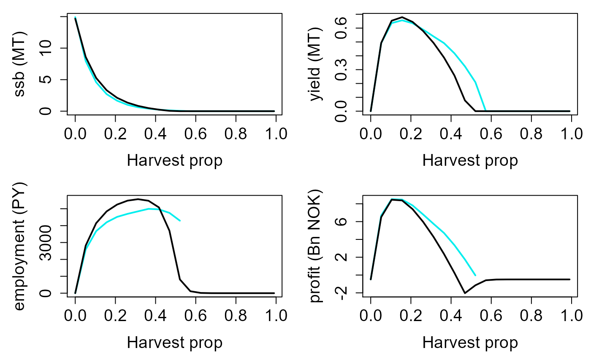

Simulating multiple populations at once
Jaideep Joshi
28 March 2022
multi_populations.RmdWe can use the fishery simulator to simulate multiple populations (i.e., populations with different control parameters) at once. Suppose we want to look at fishery properties as a function of the harvest proportion.
Preparation
As usual, we start with creating a prototype fish
fish = new(Fish)
fish$par$s0 = 0.09637
fish$par$Bhalf_growth = 100e11
fish$par$use_old_model_mat = TThen, we create an unfished population (we need to do this only once).
pop_K = new(Population, fish)
pop_K$set_superFishSize(2e6)
K_ibm = pop_K$noFishingEquilibriate()Create a simulator and assign the non-fished population to it.
sim = new(Simulator, fish)
sim$setNaturalPopulation(pop_K)Create a population to simulate
pop = new(Population, fish)
pop$par$Bhalf = 365426284/4.7
pop$set_superFishSize(2e5)This population will be reused by the simulator.
Simulate
We can now simulate populations with different harvesting rates.
Here, we simulate 20 populations with harvesting rates specified by the
hvec vector. The simulate_multi function
returns an array if dimensions {nsteps, length(hvec), 4}.
The last dimension is four because four utilities are returned: {ssb,
yield, employment, profit}.
nsteps = 200
hvec = seq(0, 0.99, length.out = 20)
res_ibm_full = sim$simulate_multi(pop, hvec, nsteps, T)Plot
lf = 45
arr = res_ibm_full
dat_ibm = data.frame(matrix(ncol=4, nrow=0))
colnames(dat_ibm) =c("ssb", "yield", "employment", "profit")
dat = data.frame(matrix(ncol=6, nrow=0))
colnames(dat) =c("ssb", "yield", "emp.sea", "emp.shr", "profit.sea", "profit.shr")
for (ih in 1:length(hvec)){
res = simulate(hvec[ih], lf, F)
v = colMeans((res$summaries %>% select(SSB, Y, D.sea, D.shr, P.sea, P.shr))[151:200,])
dat[nrow(dat)+1,] = v/c(1e9, 1e9, 1, 1, 1e9, 1e9)
v_ibm = colMeans(arr[151:200, ih, ])
dat_ibm[nrow(dat_ibm)+1,] = v_ibm/c(1e9, 1e9, 1, 1e9)
}
dat$employment = dat$emp.sea+dat$emp.shr
dat$profit = dat$profit.sea+dat$profit.shr
par(mfrow = c(2,2), mar=c(5,5,1,1), cex.lab=1.5, cex.axis=1.5)
matplot(ylab="ssb (MT)",y=cbind(dat_ibm$ssb, dat$ssb, dat_ibm$tsb, dat$tsb), x=hvec, type="l", col=c("cyan2", "black", "orange", "magenta"), lwd=2, lty=1, xlab="Harvest prop")
matplot(ylab="yield (MT)",y=cbind(dat_ibm$yield, dat$yield), x=hvec, type="l", col=c("cyan2", "black"), lwd=2, lty=1, xlab="Harvest prop")
matplot(ylab="employment (PY)",y=cbind(dat_ibm$employment, dat$employment), x=hvec, type="l", col=c("cyan2", "black"), lwd=2, lty=1, xlab="Harvest prop")
matplot(ylab="profit (Bn NOK)",y=cbind(dat_ibm$profit, dat$profit), x=hvec, type="l", col=c("cyan2", "black"), lwd=2, lty=1, xlab="Harvest prop")